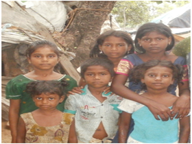

CHILD WELFARE
CHILD WELFARE
Childhood is the most innocent phase in human life. It is that stage of life when the human foundations are laid for a successful adult life. Many children, instead of spending it in a carefree and fun-loving manner while learning and playing, are scarred and tormented. They hate their childhood and would do anything to get out of the dungeons of being children and controlled and tortured by others. They would love to break-free from this world, but continue to be where they are, not out of choice, but force. This is the true story of child labor. The two primary reasons for the ever-growing social malice of child labor are poverty and lack of education. Considering the two primary reasons VLCR & RC is running many child welfare programmes for the past decade. Of late, the numbers of street children are on increase and it is certainly a threat to the future of the country. The trust has taken a special drive and captured many street children with the help of Govt Officials even in the midnight and after counseling they are sent to their homes, if the children are on wrong path/ drug addiction/ deserted by the families then they are sent to the government boys/girls homes so that they can learn how to live with dignity and get educated. To provide rehabilitation and health services to ensure their childhood saved...
STREET CHILDREN REHABILITATION PROGRAMME
"Childhood is not for streets"
Street Children are prone to live in vulnerable conditions and deteriorating health conditions day by day due to several reasons. They also become addicted to many bad habit's and drugs affecting the society directly and indirectly. VLCT & RC conducted root level survey in railway stations and other crowded areas to identify such children and bring them into our fold by creating confidence about our intentions and they are supported by providing shelter and necessary counseling programmes and sensitization programmes..
RESCUE AND REHABILITATION OF ORPHAN CHILDREN
"Providing a family of love and dignity"
VLCT & RC has till date rescued and rehabilitated 103 No's of ORPHANS and children with different problems were adopted and rehabilitated, and reformed them by admitting into school. The main focus was laid on particular area where number of children was in different types of social problems. The teams of VLCT & RC are working 24x7 days and ready to rush to the child in problems..
CHILDLINE ACTIVITIES
"Save a child 24x7 just a call away"
CHILDLINE is a challenging project by the Ministry of Women & Child Development, Government of India operational in 104 cities in India. After being convinced about the services of the trust for the child rights, the Ministry has appointed VLCT & RC has Collaborative organization through for rendering their services in Nellore. The role of the organization is primarily intervention in cases received, creating awareness about Child Line programmes, documentation, co-ordination with allied Departments in and around Nellore..
FIGHT FOR CHILD RIGHTS
"Children also having equal rights along with adults"
Our trust stands first in fighting for the rights of the child labor and rights protection as the chairperson herself being mother can very well understand the situation of children working in various activities in the society. VLCT & RC strives and thrives for the rights and responsibilities of children and voices in the protection of children from child labor. Frequent rallies and awareness programmes were conducted for enhancing the child labor and child rights..
SCHOOL CHILDREN COUNSELING PROGRAMME
"Schooling a right for every child"
VLCT & RC has conducted many number of counselling and awareness programmes regarding emotional problems, school adjust mental problems, study habits and behavioral modifications at the school level believing that children are the foundations of the nation. Throughout these counseling programmes we developed self confidence in school children and make them good citizens with social sense...
CELBREATONS FOR THE LESS PREVILIGED
"To bring a smile in the gloomy faces of the misfortuned children"
VLCT & RC feels that the every children should have the right to celebrate the "Children's Day". So the trust have conducted many programmes for the Children and given encouragement to their talents by distributing gifts and prizes...
HEALTH BABY SHOWS
"Awareness to one and all"
In many homes, babies are neglected on health care matters for lack of profound knowledge and awareness. Recognizing the importance of baby health in the wider context of the country, VLCT & RC conducts annual Health Baby Shows for public to inculcate the right spirit of competition among mothers..
FREE NUTRITION SERVICES
"Health and hygiene to everyone"
Survey was conducted by VLCT & RC among the children and indentified most of the children were suffering from malnutrition problems which are an alarming situation to be focused. VLCT & RC has conducted much number of camps to provide necessary vitamins syrups, and nutrition packets to more than 2 lakhs children were benefitted...
GIVING A NEW LIFE TO THE UNTOUCHED AND ABANDONED BURIALGROUND CHILDREN, Nellore
"Transformed from Neglected to nurtured lives"
Bodigadithota is a Hindu burial ground situated near Nellore where VLCT & RC has found many number of children living in very pathetic condition and the children playing with the remains of the dead bodies at the burial ground. VLCT & RC is the only trust which has identified this real situation, and wanted to bring changes in the lives of these children. Plunging into action our trust wanted to adopt all the children from this graveyard, but the parents of these children were not willing to cooperate with us. Counseling and awareness programs were conducted to enlighten the parents and the children were infused into bright future...
PROVIDING CARE AND SUPPORT TO THE INFECTED AND EFFECTED CHILDREN OF H.I.V
"Springs of joy filled in the children of abandoned"
AIDS is the recent addition to the catalog of viral diseases. People all over the world realized the on slot of AIDS / HIV on upswing launched several programmes to prevent the spread of HIV. While becoming a part of such a global project VLCT & RC organized rallies throughout the district to alarm the people against HIV / AIDS The trust has adopted 3 children suffering from AIDS promising to give medical aid throughout their lives. Our Trust educates the sex workers about AIDS and how to prevent it...